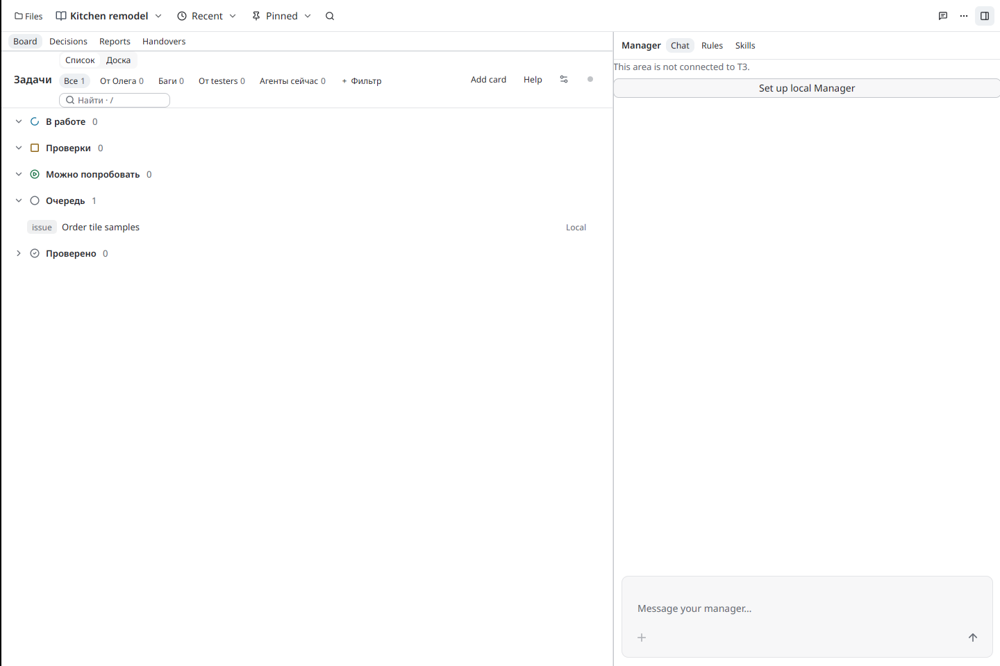

A project gives a vault folder a Board for tasks and tabs for its decisions, reports and handovers. Notes stay ordinary Markdown files. A local project needs no account, repository or T3 connection.
Before you start
You need a vault folder you can write to. For a first try, use a separate practice vault. Open Settings → Features and turn on Agents. This reveals Projects; it does not connect T3 or start a Manager.
Create a project
- Open the app menu and choose Projects. The page lists the projects found in this vault. Search and All / Code / Knowledge / Hybrid narrow the list.
- Choose New project…. Enter Folder as a path inside the vault; an existing folder keeps its notes. Enter Name and choose Code, Knowledge or Hybrid.
- Leave Create the project in T3 unchecked for local work, then choose
Create project. The manifest is saved as
.okilum/project.tomlin that folder, and an@index.mdnote is added only when the folder has none.
Open the project and move around
- Select the project in the list. Tabs are on the left; the Manager panel is on the right.
- Board holds local cards and, after you add a repository, linked issues.
Decisions, Reports and Handovers show read-only Markdown records
from the project's
decisions,reportsandhandoversfolders (or theirops/versions; Reports also readsops/daily). Select a record to read it. Create or edit records in Files, then choose Refresh on that tab. - The project name in the top bar switches projects. It lists recent and all projects, New project… and Leave project.
- Choose Files at the top left to return to the vault tree and your notes. Projects in the top bar opens a project again.
Put a first task on the Board
- On the Board tab choose Create board. Keep the title; Goal, Repository and Stage note are optional. Choose Create board to save. Manage board opens.
- Choose Local cards → Add card. Enter a title such as “Order tile samples”, keep Todo and choose Save card.
- Choose Back to Manage board, then close it. The card is listed under Очередь / Queue; click that heading if the group is collapsed.
Cards are saved in .okilum/board-local.toml and are still there after you
leave and reopen the project. The Board's own Help covers card states,
views, search and linked issues.
What a local project does not do
The Manager panel says This area is not connected to T3 until you choose Set up local Manager. Manager, T3 projects and agents are optional and are not part of this guide or its video.
Decisions, Reports and Handovers only read records that already exist; they do not create them. A local Board shows no pull request or CI status until you add a repository in Manage board → Board details.
Opening Help changes no files and starts no service. Creating a project, a Board or a card writes files in the project folder.
If something is missing
Projects is not in the app menu: turn on Agents in Settings → Features.
No projects are listed: a folder becomes a project only through its manifest. Create one with New project…. A manifest Okilum cannot read is listed with a warning sign; hover it for the reason.
A new record does not appear: save it in one of the record folders above, then choose Refresh on that tab.
The bundled video shows a real Linux beta 7838, source
aef9f091571c5c1367509b05ef6fe0ce2ea5052e, using a private practice vault.
Its cursor and captions show every step from turning on Agents to the reopened
project with its saved card. It is a tutorial, not a timing measurement or
human acceptance.
